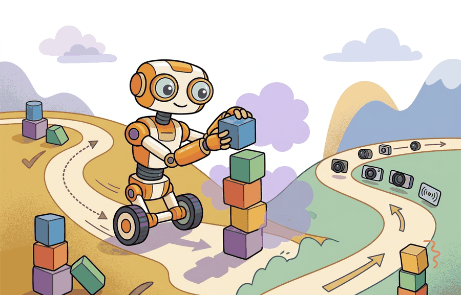

"A benchmark is a contract. Sign it the same way every time, or the results are not comparable."
A Referee Environment, Strictly

This section assumes familiarity with the reality gap and transfer metrics introduced in section 9.4. The benchmark selection discipline developed here is applied directly in section 10.1, where Gymnasium APIs enforce the observation, action, and reset contracts described on this page, and in section 12.5, where Habitat, AI2-THOR, and ProcTHOR are evaluated as concrete benchmark choices. The sim-to-real robustness construct used as a running example recurs in section 20.1 alongside domain randomization and hardware calibration methods.
Two teams report state-of-the-art grasping (as of 2024). Both claim 90 % success. Neither can compare results because one used MuJoCo with a parallel gripper and the other used IsaacGym with a dexterous hand, different contact solvers, different reset seeds, different success thresholds. The field now has dozens of simulators, each freezing a different slice of physics and semantics, and picking the wrong one invalidates a claim before the robot is ever touched.
This section maps the benchmark landscape so you can match the environment to the construct you actually need to test. You will leave with a principled way to audit any simulator choice and expose the failure modes that matter for your specific embodied agent.
Benchmarks Are Constructs, Not Leaderboards
A benchmark environment measures a construct: locomotion stability, contact-rich manipulation, multi-agent coordination, navigation under partial observability, household task completion, visual grounding, or sim-to-real robustness. The benchmark's application programming interface (API), assets, physics, sensor model, and metric define that construct.
The practical question is not which environment is most popular. The question is which environment makes the right failure possible. In one documented case, a team scored 91% on a manipulation benchmark, then saw only 40% success on the real robot because the benchmark's contact model did not reproduce the target gripper surface: the same policy, the same hardware, and a 51-percentage-point drop explained entirely by a missing construct. This is called the construct-validity gap, and every benchmark comparison that ignores it is comparing noise. A grasping benchmark that never models contact slip cannot validate contact robustness. A household benchmark without persistent object state cannot validate long-horizon interaction.
Think of a benchmark like a standardized recipe judging: the judges score only the dish you plated, not whether you can cook the dish a different way tomorrow. A team that perfects the exact recipe for the judges (contact model, friction coefficients, object meshes) will win the competition score, but that score says nothing about cooking the same meal with different ingredients in a real kitchen. The construct-validity gap is exactly this: the judges froze a specific set of conditions, and your policy learned to win those frozen conditions, not the broader skill you intended to prove.
The best benchmark is the one whose task contract can expose the failure mode that would invalidate your claim. A high score on the wrong construct is not evidence for the real robot you want to build.
Environment Families And Valid Claims
Gymnasium-style APIs are useful for clean reinforcement-learning contracts. PettingZoo extends that discipline to multi-agent settings. MuJoCo, robosuite, ManiSkill, and Isaac Lab are often chosen for contact, manipulation, locomotion, vectorized rollouts, and controller integration. Habitat, AI2-THOR, ProcTHOR, BEHAVIOR, and OmniGibson emphasize embodied navigation, household semantics, object state, and visual interaction.
Each family has a validity envelope. If the claim is about torque-level transfer, check dynamics, contacts, actuation, and timing. If the claim is about embodied household reasoning, check scene diversity, affordances, persistent state, and task definitions. If the claim is about policy comparison, check whether all methods run through the same wrapper and metric script.
A benchmark works by freezing enough of the world contract that two policies can be compared. The frozen pieces include reset distribution, observation space, action space, time limit, success metric, hidden state, and logging format. Any unfrozen piece should be recorded as an experimental degree of freedom.
Worked Example
Code Fragment 9.5.1 scores candidate benchmark families against a task claim. The point is not to rank tools globally. The point is to make the construct match explicit before the experiment starts.
# Match benchmark families to the construct a claim needs.
# Weak matches become limits on what the result can support.
claim_needs = {"contact", "object_state", "vision", "failure_labels"}
benchmarks = {
"MuJoCo manipulation": {"contact", "controller_timing", "failure_labels"},
"ManiSkill": {"contact", "vision", "object_state", "failure_labels"},
"Habitat navigation": {"vision", "layout_diversity", "navigation_metrics"},
"ProcTHOR household": {"vision", "object_state", "layout_diversity"},
}
for name, supports in benchmarks.items():
missing = sorted(claim_needs - supports)
verdict = "candidate" if not missing else f"claim limit: missing {missing}"
print(f"{name}: {verdict}")MuJoCo manipulation: claim limit: missing ['object_state', 'vision'] ManiSkill: candidate Habitat navigation: claim limit: missing ['contact', 'failure_labels', 'object_state'] ProcTHOR household: claim limit: missing ['contact', 'failure_labels']
Algorithm: Benchmark Environment Selection via Construct Matching
Input: claim construct $C$, candidate environment set $\mathcal{E} = \{e_1, \ldots, e_n\}$, each with feature set $F(e_i)$; required feature set $R(C)$; transfer probe budget $\pi$
Output: ranked candidate list $\mathcal{E}^* \subseteq \mathcal{E}$, benchmark card $\theta$, known-limit set $\Lambda$
- Express claim $C$ as a set of required features $R(C)$ covering observation space $o$, action space $a$, success metric $m$, failure labels $\ell$, and asset distribution $\alpha$.
- For each candidate $e_i \in \mathcal{E}$, compute the coverage gap $\Delta_i = R(C) \setminus F(e_i)$ and score coverage $s_i = |R(C) \cap F(e_i)| / |R(C)|$.
- Discard any $e_i$ where $\Delta_i$ contains a non-negotiable feature (contact model, object persistence, or failure label type); record each discard in $\Lambda$.
- Rank remaining $\mathcal{E}^*$ by $s_i$ descending; break ties by asset diversity and maintained wrapper quality.
- For the top-ranked $e^* \in \mathcal{E}^*$, instantiate benchmark card $\theta$ with fields: environment version, observation space $o$, action space $a$, reset distribution $\rho$, seed set $\mathcal{S}$, metric $m$, failure taxonomy $\ell$, and known limit $\Lambda$.
- Run a random policy $\pi_{\text{rand}}$ and a scripted baseline $\pi_{\text{base}}$ through the same evaluation wrapper; verify reset integrity, metric consistency, and absence of privileged-state leakage.
- Freeze the held-out task panel $\mathcal{T}_{\text{held}}$ before any policy $\pi$ is tuned; record the frozen panel hash in $\theta$.
- Execute policy $\pi$ under $\theta$; log per-episode traces, $\nabla$ reward signals, failure labels, and configuration artifact.
- For any real-world transfer claim, perform at least one hardware probe covering the target object set; annotate gap $\nabla_{\text{real}} = \theta_{\text{sim}} - \theta_{\text{real}}$ in $\Lambda$.
- Report three separate claims: benchmark claim (what $e^*$ measures), systems claim (what artifact makes results reproducible), and transfer claim (what $\Lambda$ leaves untested).
The hand checklist is for understanding. In practice, Gymnasium, PettingZoo, ManiSkill, Isaac Lab, Habitat, and ProcTHOR expose maintained wrappers, seed handling, task registries, and metric scripts. The shortcut is valuable only if the wrapper preserves the benchmark's validity contract instead of hiding it.
Practical Recipe
- Write the claim as a construct: contact robustness, visual navigation, household state tracking, coordination, or transfer.
- Choose an environment family whose observation, action, asset, reset, and metric contract can measure that construct.
- Run a random policy, a scripted baseline, and the intended policy through the same wrapper to test logging and metric sanity.
- Record failures as structured cases: perception, state, planning, control, task semantics, timing, or metric mismatch.
- Report the benchmark's unsupported assumptions beside the positive result.
For Benchmark environment map, a simulator run becomes evidence only after the falsifiable hypothesis, held-out seeds, perturbation panel, and untested real-world assumption are written down.
Students often assume that a higher-fidelity or more widely adopted simulator automatically produces a more valid benchmark result. It does not. Construct match determines validity, not simulator prestige. A GPU-parallelized contact simulator that omits persistent object state cannot validly measure a household task claim, no matter how fast or accurate its physics engine is. Every benchmark environment covers a specific set of construct features. The only question that matters is whether those features include every requirement of your claim. Everything else is irrelevant.
A leaderboard score is not automatically a deployment claim. It is evidence for the benchmark's construct, asset distribution, metric, and wrapper version. State that envelope before comparing methods.
Consider a specific case: a team trains a pick-and-place policy in MuJoCo, achieves 91% success on the benchmark panel, and then deploys to a real Franka arm. The policy fails on 60% of trials because MuJoCo's default friction model does not reproduce the rubber-tipped gripper pads used on the physical robot. The benchmark never exposed this because all training and evaluation objects shared the same simulated surface coefficient. The score was valid for the benchmark's construct (torque-level control under default friction), but the team's deployment claim required a friction-calibrated construct that the environment never measured. The fix is not to distrust MuJoCo: it is to write a known-limit field in the benchmark card before reporting the score, and to run at least one real-hardware probe with the target object set before asserting transfer.
A mobile manipulation team might use Habitat or ProcTHOR to evaluate navigation and object search, then ManiSkill or Isaac Lab for contact-rich manipulation. The paper-facing claim should not merge those scores into one number. It should say which construct each environment measured and where a real calibration check remains necessary.
A benchmark is a gym membership for one skill. Winning the treadmill does not prove you can assemble furniture.
Photorealistic, physics-accurate simulation at scale (2024-2026). NVIDIA Isaac Lab (2024) and ManiSkill3 (Gu et al., 2024) combine GPU-parallelized rigid-body contact solvers with ray-traced rendering and paired sensor noise models, enabling thousands of simultaneous rollouts with per-object sim-to-real gap estimates. The frontier is closing the loop between visual realism and contact accuracy in a single environment rather than trading one off against the other.
Foundation-model-driven benchmark generation (2024-2025). RoboGen (Wang et al., 2024) and ManipGen use large language models and diffusion models to synthesize novel task descriptions, object arrangements, and reward functions procedurally, replacing static asset sets with unlimited task variety. This direction targets the asset-diversity bottleneck that causes policies to overfit to the benchmark's fixed object distribution rather than learning generalizable skills.
Standardized evaluation across heterogeneous embodiments (2024-2026). GROOT (2024, NVIDIA) and the AgiBot World dataset (AgiBot, 2025) attempt unified task suites that evaluate the same skill specification across wheeled bases, quadrupeds, and dexterous hands, surfacing how much of a policy's score is embodiment-specific rather than skill-general. The goal is an embodiment-agnostic benchmark card analogous to a language benchmark that scores models regardless of parameter count.
Open problem for a PhD student: structured failure-label taxonomies remain absent from every major benchmark suite. A benchmark can report a 72% success rate but cannot tell you whether the remaining 28% failed due to contact slip, visual misgrounding, state estimation drift, or planning horizon collapse. Building a failure-label protocol that integrates into the Gymnasium reset-step-reward loop, runs at GPU-parallelized speed, and maps each episode's terminal state to a causal category would make benchmark scores diagnostic rather than merely comparative, and would directly unlock the sim-to-real calibration workflows that practitioners currently perform manually and inconsistently.
For one benchmark you plan to use, name the construct, observation space, action space, reset distribution, metric, version, and unsupported real-world assumption. If one field is missing, the benchmark choice is not yet defensible.
Benchmark environment map becomes useful when it is tied to a closed-loop contract. The contract names the observation stream, action representation, reset distribution, timing budget, metric, assets, version, and evaluation artifact. Without that contract, a model can look capable in a benchmark table while failing the first time the real task changes an object state the environment never modeled.
The graduate-level habit is to separate three claims. The benchmark claim says what construct the environment measures. The systems claim says what wrapper and artifact make the result reproducible. The transfer claim says which real-world assumptions remain untested. Keeping those claims separate prevents benchmark convenience from becoming benchmark overreach.
| Tool or Library | Role in the Topic | Builder Advice |
|---|---|---|
| Gymnasium | Single-agent environment API | Use when reset, step, seeding, wrappers, and metrics need a clean reproducible interface. |
| PettingZoo | Multi-agent interaction API | Use when coordination, competition, or turn structure is part of the embodied construct. |
| ManiSkill or robosuite | Manipulation benchmarks | Use when contact, object state, cameras, and scripted task panels matter for robot skill claims. |
| Habitat, AI2-THOR, or ProcTHOR | Navigation and household semantics | Use when scene layout, visual grounding, and object affordances matter more than torque-level physics. |
| Isaac Lab | Vectorized robot-learning workloads | Use when scaling many simulated robot tasks requires assets, sensors, controllers, and GPU throughput. |
Before reading on, guess: if two researchers both claim to use "ManiSkill" but one runs version 2.0 and the other runs version 3.0 with different object meshes and friction defaults, can their benchmark scores be directly compared? The answer determines whether the numbers in a published table are evidence or noise.
A robust implementation starts with a benchmark card before it starts with a policy. The card should log the environment version, wrapper stack, task panel, observation and action spaces, seeds, metric script, asset set, and failure taxonomy. The policy result is interpretable only after that card exists.
Why this matters for embodied AI: a real robot carries physical tolerances that a simulator approximates differently depending on its version, asset set, and reset distribution. Without a written card, two researchers may call their setups "ManiSkill" yet run different object meshes, friction coefficients, and success thresholds. The gap between their scores is then indistinguishable from a genuine policy difference, making every hardware deployment decision unreliable.
How it works: the card acts as a hash over the environment contract. Each field pins one degree of freedom, so any change produces a different card. When two policies share an identical card, their scores come from the same frozen world and can be compared. Any field left unspecified is an uncontrolled variable that can absorb or mask real performance differences.
- Write a benchmark card with construct, environment version, wrapper stack, seeds, metric, and failure labels.
- Run random and scripted baselines to catch broken resets, hidden privileged state, and metric leakage.
- Freeze the held-out task panel before tuning policies or curricula.
- Save videos, traces, configs, metric outputs, and failure labels in one artifact bundle.
- Compare methods only when one script evaluates them on the same benchmark card.
# Build a benchmark card before reporting a policy score.
# The card states what construct the environment can validly measure.
from dataclasses import dataclass, asdict
@dataclass
class BenchmarkCard:
environment: str
construct: str
observation_space: str
action_space: str
metric: str
known_limit: str
def as_row(self) -> dict[str, object]:
return asdict(self)
card = BenchmarkCard(
environment="ManiSkill pick-and-place panel",
construct="vision-conditioned contact manipulation",
observation_space="RGB-D camera plus proprioception",
action_space="end-effector delta pose",
metric="held-out object success rate with failure labels",
known_limit="requires real friction calibration before deployment claims",
)
print(card.as_row()){'environment': 'ManiSkill pick-and-place panel', 'construct': 'vision-conditioned contact manipulation', 'observation_space': 'RGB-D camera plus proprioception', 'action_space': 'end-effector delta pose', 'metric': 'held-out object success rate with failure labels', 'known_limit': 'requires real friction calibration before deployment claims'}BenchmarkCard defines a ManiSkill-style manipulation panel before any policy score is reported. The card ties the score to a construct, interface, metric, and known real-world limit. RGB-D (Red-Green-Blue plus Depth) denotes a camera that returns a color image alongside a per-pixel depth map.Expected output: the record exposes the benchmark's construct and its known limit before any model result appears. That ordering keeps the environment from being used to support claims it cannot measure.
When a benchmark experiment fails, avoid labeling the method as weak before checking the wrapper and construct. First assign the failure to perception, state estimation, planning, control, task semantics, timing, data coverage, or metric mismatch. Then rerun one controlled perturbation that isolates the suspected cause. This pattern turns a disappointing benchmark score into a reusable diagnostic asset.
Benchmark environments are useful when their contracts match the construct being claimed and their artifacts make failures diagnosable.
Choose one embodied task and draft a benchmark card for it. Include the construct, environment family, observation space, action space, reset distribution, metric, version, failure labels, and unsupported real-world assumption.
This paper anchors the simulator design lineage behind much modern robot learning. It is useful here because it explains why fast, controllable simulation became central to model-based control and policy testing. Readers should connect this source to the benchmark environment map when deciding what is reusable, what is benchmark-specific, and what must be remeasured.
Brockman, G. et al. (2016). "OpenAI Gym." arXiv.
The Gym paper explains the environment API that shaped modern reinforcement-learning experimentation. Readers should use it to understand why reset, step, render, and reward contracts became standard research infrastructure. Readers should connect this source to the benchmark environment map when deciding what is reusable, what is benchmark-specific, and what must be remeasured.
Farama Foundation. "Gymnasium Documentation."
Gymnasium is the maintained successor interface for single-agent reinforcement-learning environments. It matters in this chapter because simulation evidence depends on reproducible environment boundaries and seed handling. Readers should connect this source to the benchmark environment map when deciding what is reusable, what is benchmark-specific, and what must be remeasured.
NVIDIA. "Isaac Lab Documentation."
Isaac Lab documents a modern robot-learning workflow on top of Isaac Sim. Practitioners should read it when simulation must include vectorized tasks, assets, sensors, and learning-library integration. Readers should connect this source to the benchmark environment map when deciding what is reusable, what is benchmark-specific, and what must be remeasured.
This work shows how randomized dynamics can train policies that tolerate physical mismatch. It is a useful bridge from this chapter into later transfer and domain randomization chapters. Readers should connect this source to the benchmark environment map when deciding what is reusable, what is benchmark-specific, and what must be remeasured.
Project Ideas
Benchmark card auditor (beginner, weekend): Build a Python script that instantiates a Gymnasium environment (such as FetchPickAndPlace-v2 via Gymnasium-Robotics), runs a random policy for 100 episodes, and auto-fills a BenchmarkCard dataclass with observation space shape, action space bounds, episode length, and success rate. The key challenge is surfacing the reset distribution and metric computation from the wrapper internals rather than trusting documentation alone.
Construct-match benchmark selector (intermediate, 1-2 weeks): Implement the construct-matching algorithm from Algorithm 9.5.1 as a small CLI tool that reads a user-defined claim YAML (listing required features such as contact, object_state, and vision) and scores a registry of environments including MuJoCo manipulation tasks, ManiSkill pick-and-place panels, PyBullet manipulation tasks, and Isaac Lab locomotion suites, then outputs a ranked candidate table with coverage gaps. The key challenge is building and maintaining an accurate feature registry for each environment family so that coverage gaps reflect real API and asset limitations rather than documentation claims.
Sim-to-real gap probe with LeRobot (intermediate, 1-2 weeks): Use the LeRobot dataset and a MuJoCo or PyBullet simulation of the same task to train an imitation policy in simulation, then log per-episode failure labels (contact slip, grasp misalignment, timing jitter) both in sim and during real rollouts on a low-cost SO-100 arm. The key challenge is aligning the real and simulated observation spaces tightly enough that failure labels are comparable across both environments without privileged simulator state leaking into the real pipeline.
Chapter 10 turns simulation motivation into concrete Gymnasium and PettingZoo environment practice.